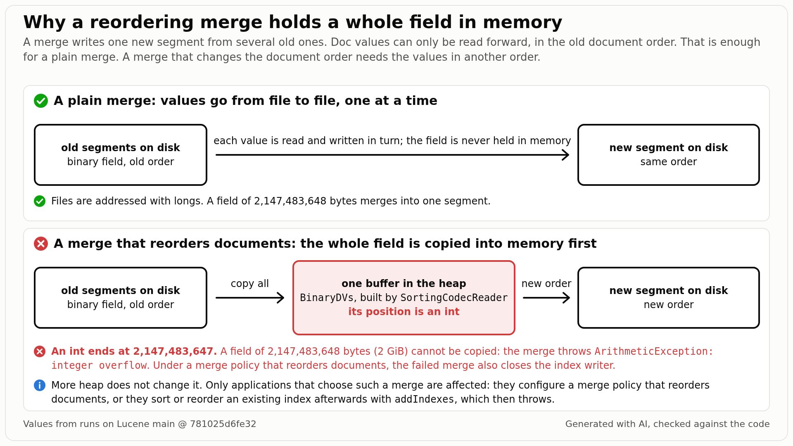

A merge that changes the document order cannot stream doc values from file to file, because they are read forward only. So SortingCodecReader first copies each binary field into the heap. The copy is one BytesRefArray, and its buffer counts bytes in an int: it holds at most 2,147,483,647 bytes.
BinaryDocValuesFieldstores one byte string per document, in a column on disk. Lucene limits the length of one value, not the size of the column, and files are addressed with longs.- A merge writes one new segment from several old ones. A plain merge reads each value and writes it, one after the other. A merge that renumbers documents, to sort them or to make the index smaller and faster (
BPReorderingMergePolicy), needs the values in another order. - Doc values can only be read forward. So for such a merge
IndexWriterreads the old segments throughSortingCodecReader, which copies each binary field into memory and then hands the values out in the new order.

![Three panels and two result boxes. What you do: a writer with the serial merge scheduler and BPReorderingMergePolicy over TieredMergePolicy, one BinaryDocValuesField of 8,192 bytes per document, addDocument 262,144 times, forceMerge(1); 262,144 times 8,192 is 2,147,483,648 bytes (2 GiB) in the field; the heap is 4 GB. What Lucene does inside forceMerge(1): it starts one merge of all 17 segments, merge.reorder returns a document map, SortingCodecReader.wrap gives the merge a sorted view, and new BinaryDVs copies all of the field into the heap. Where it goes wrong: the copy is one BytesRefArray buffer made of blocks of 32,768 bytes; 262,143 values are copied (2,147,475,456 bytes); value 262,144 would take the position to 2,147,483,648, and an int ends at 2,147,483,647; BinaryDocValuesWriter.java line 287 appends every value to the one buffer and ByteBlockPool.java line 199, Math.addExact, throws. Expected: forceMerge(1) returns with one segment holding all 262,144 values; it returns in the same heap with one value fewer, with TieredMergePolicy alone and with a long-addressed copy. Actual: ArithmeticException: integer overflow, thrown by forceMerge(1) from BinaryDVs; the exception leaves the merge, so IndexWriter closes: isOpen() is false and a later addDocument throws AlreadyClosedException. Runs on Lucene main 781025d6fe32 (assertions on and off) and branch_11x daa54f2e0cd3.](../assets/LFV-1486/bug.png)
- You opt in to a merge policy that reorders documents,
new BPReorderingMergePolicy(new TieredMergePolicy(), new BPIndexReorderer())fromlucene/misc, and index 262,144 documents with one 8,192-byteBinaryDocValuesFieldeach. The field now holds 2,147,483,648 bytes: 2 GiB. - You call
forceMerge(1)and expect one segment with every value. Lucene limits the length of one binary value, not the size of a field. With one value fewer the same merge completes, andTieredMergePolicyalone merges the full 2 GiB. - Instead
forceMerge(1)throwsArithmeticException: integer overflow. To hand out the values in the order of the policy's document map, Lucene first copies the whole field into one in-memory buffer whose position is a Javaint, and 2,147,483,648 does not fit in anint. More heap does not help: with a long-addressed buffer the same test passes in the same 4 GB heap. - The exception leaves a merge, so
IndexWritercloses itself:isOpen()is false andaddDocumentthrowsAlreadyClosedException. If the documents were committed before the merge, that commit is intact and all 262,144 values read back; documents added since the last commit go with the writer (the test itself never commits). After a commit, a new writer with the same policy fails again and a writer withTieredMergePolicyalone merges the same segments. - Two documented ways to sort or reorder an existing index,
addIndexes(SortingCodecReader.wrap(reader, sort))andBPIndexReorderer.reorderwithaddIndexes, build the same copy and throw the same exception; that writer stays open. On main and branch_11x theBpVectorReorderercommand line throws it too, and in the run it left a one-segment index empty (a separate finding, LFV-1022). With a heap too small for the copy, every path fails earlier withOutOfMemoryError. That is the known memory cost of this reader and not part of this finding.
Applications that opt in to a reordering merge (BPReorderingMergePolicy from lucene/misc, or their own OneMerge.reorder) or that sort or reorder an existing index through SortingCodecReader, and only when one binary doc-values field of what is wrapped reaches 2 GiB and the heap can hold the copy. It fails loudly; a commit made before the merge stays intact. Rare; Low priority.
Mechanism, terms and numbers2,063 words
A merge that gets a document map reads its input through SortingCodecReader. IndexWriter wraps the merge in that reader itself when MergePolicy.OneMerge.reorder returns a map (IndexWriter.java:6071-6093 on main 781025d6fe32). BPReorderingMergePolicy from lucene/misc returns one for a forced merge and, with its defaults, for a natural merge, unless its reorderer reports too little RAM for its own budget or the merge is partitioned (then the merge is a plain one and does not fail). The map need not move any document. An application wraps a reader by hand in the re-sort recipe of the class javadoc, addIndexes(SortingCodecReader.wrap(reader, sort)); BPIndexReorderer.reorder and, on main and branch_11x, the command line of BpVectorReorderer wrap for their caller. For each BINARY doc-values field the reader builds BinaryDocValuesWriter.BinaryDVs (SortingCodecReader.java:719-726), which appends every value of the field to one BytesRefArray (BinaryDocValuesWriter.java:276-291). That array keeps its bytes in one ByteBlockPool, whose position is an int advanced with Math.addExact (ByteBlockPool.java:199). The append that takes the copy to 2^31 bytes throws ArithmeticException: integer overflow.
Executed on main and on branch_11x daa54f2e0cd3: with 262,144 values of 8,192 bytes (2,147,483,648 bytes) under BPReorderingMergePolicy, forceMerge(1) throws; with 262,143 values it returns and every value reads back; under TieredMergePolicy alone the full 2 GiB merge into one segment. The exception leaves a merge, so IndexWriter closes with a tragic exception; a new writer with the same policy fails again; a commit made before the merge stays intact, and documents added since go with the writer. Through the re-sort recipe and through BPIndexReorderer.reorder, addIndexes throws the same exception and the writer stays open. The command line of BpVectorReorderer (main and branch_11x only; in no release) throws it too and leaves the index without its documents: that loss is the separate finding LFV-1022, which this failure triggers. More heap does not help: with the copy kept in a long-addressed buffer the same test passes in the same 4 GB heap.
What is claimed is only this heap-independent cap. With a heap smaller than the field the same merge already fails with OutOfMemoryError; that in-heap copy is a known and accepted memory cost of this reader (#10579; Jim Ferenczi on #10623 in 2020) and is not part of this finding. On every way in that was run, the cap needs three things: one of the opt-in ways in (a merge policy that returns a document map, the experimental re-sort recipe, BPIndexReorderer.reorder, or the BpVectorReorderer command line), 2 GiB in one binary field of what is wrapped, and a heap that holds the copy. It fails loudly, and on every way in but the last it loses no committed data. Priority Low. The flush of an index-sorted segment builds the same copy; it was not run at full size and is not claimed.
The copy became a BytesRefArray in LUCENE-9539 (c82b99464da, apache/lucene-solr#1908, 2020), first released in 8.7.0 together with SortingCodecReader; the same commit gave the sorted views of SORTED_NUMERIC and SORTED_SET fields long offsets. BPIndexReorderer.reorder reaches the copy since 9.8.0 and reordering merges since 9.9.0. On 8.7.0 to 9.7.0 the failure is an ArrayIndexOutOfBoundsException when a value that starts at or past byte 2^31 is read back; from 9.8.0 it is the ArithmeticException. Every release from 8.7.0 to 10.6.0, branch_11x and main have it; it is not new in 11.0. A validated fix keeps the values in a PagedBytes with long start offsets (one file, 29 lines added, 6 removed).
- BINARY doc values. One byte string per document (
BinaryDocValuesField). The only documented limit is the length of one value: "Maximum length for a binary field", checked with the message "is too large, must be <= ..." (BinaryDocValuesWriter.java:39-40,:81-84). - A merge with a document map.
MergePolicy.OneMerge.reorderlets a merge policy return a map from old to new document numbers: "Returning a non-null value here disables several optimizations and increases the merging overhead",@lucene.experimental(MergePolicy.java:341-355).BPReorderingMergePolicy(lucene/misc) returns one for a forced merge and, with its defaultminNaturalMergeNumDocs = 1, for a natural merge (BPReorderingMergePolicy.java:46-47,:102-117,:128-143), with two exceptions: its reorderer reports too little RAM for its own budget (:135-139; by default a tenth of the JVM's total memory when the reorderer is created), or, on main and branch_11x, the merge is partitioned (:131-134). The map may be the identity:IndexWriterwraps the merge for any map that is not null. - SortingCodecReader. "This can be used to re-sort and index after it's been created by wrapping all readers of the index with this reader and adding it to a fresh IndexWriter via IndexWriter#addIndexes(CodecReader...). NOTE: This reader should only be used for merging. Pulling fields from this reader might be very costly and memory intensive."
@lucene.experimental(SortingCodecReader.java:47-55). - Tragic exception. An exception that leaves
IndexWriter.mergecloses the writer (IndexWriter.java:5174-5178); the abort of a merge that is not external is swallowed before that (:5108-5118). UnderaddIndexes(CodecReader...)only anErroris tragic (:3401-3404).
- Without an index sort, and unless a segment has document blocks and no parent field,
IndexWriter.mergeMiddleasks the merge for a document map and, when it is not null, replaces the merge's readers bySortingCodecReader.wrap(mergedView, docMap, null)(IndexWriter.java:6060-6093). - The merge asks that reader for each BINARY field.
getBinarybuilds oneBinaryDocValuesWriter.BinaryDVsper field (SortingCodecReader.java:719-726). - The constructor of
BinaryDVsreads the field once, forward, and appends every value to one buffer:values.append(oldValues.binaryValue());(BinaryDocValuesWriter.java:280-290, the append at:287). valuesis aBytesRefArray: oneByteBlockPoolplus int start offsets (BytesRefArray.java:33-36,:64-74).- The pool is a list of blocks of 32,768 bytes.
appendasks for the next block as soon as one is full, andnextBuffer()advances an int:byteOffset = Math.addExact(byteOffset, BYTE_BLOCK_SIZE);(ByteBlockPool.java:126,:187-200,:287-306). - So the copy holds at most 2^31 - 1 bytes. The append that takes it to 2^31 bytes or more throws; no offset wraps silently before that.
- The sibling views do not have the cap: the sorted copies of SORTED_NUMERIC and SORTED_SET fields keep
long[] offsetsand aPackedLongValues(SortedNumericDocValuesWriter.java:163-190,SortedSetDocValuesWriter.java:495-529), and the unsorted writer of binary values buffers into a long-addressedPagedBytes(BinaryDocValuesWriter.java:42-46).
262,144 values of 8,192 bytes are 2,147,483,648 bytes. Value number 262,144 fills block number 65,536, which starts at byte 2,147,450,880. The pool then asks for the next block: 2,147,450,880 + 32,768 = 2,147,483,648, one more than the largest int, 2,147,483,647.
Executed with an evidence program (not the repro; lucene-core and lucene-misc only, default codec, one thread, a 4 GB heap), on main and on branch_11x with the same result:
| what | values of 8,192 bytes | bytes in the field | result |
|---|---|---|---|
reordering merge, forceMerge(1) | 262,143 | 2,147,475,456 | returns; 1 segment; every value reads back |
reordering merge, forceMerge(1) | 262,144 | 2,147,483,648 | ArithmeticException: integer overflow |
TieredMergePolicy alone, forceMerge(1) | 262,144 | 2,147,483,648 | returns; 1 segment; every value reads back |
| re-sort recipe | 262,143 | 2,147,475,456 | returns; every value reads back in the new order |
| re-sort recipe | 262,144 | 2,147,483,648 | ArithmeticException: integer overflow, the same frames |
| reordering merge and re-sort recipe with the fix | 262,144 | 2,147,483,648 | return; every value reads back |
The other ways in, each with a small program of its own (values of 8,192 bytes; a one-segment index built under the default merge policy):
| what | where | values | result |
|---|---|---|---|
BPIndexReorderer.reorder, then addIndexes(view) | main, branch_11x, 10.6.0, 9.8.0 | 262,144 | ArithmeticException: integer overflow, the same frames; the writer stays open; nothing added |
| the same | main, 9.8.0 | 262,143 | returns; every value reads back |
| the same with the fix | main | 262,144 | returns; every value reads back |
addIndexes(reader) of a plain reader into a writer with BPReorderingMergePolicy | main, branch_11x | 262,144 | ArithmeticException: integer overflow, the same frames; the writer stays open; nothing added |
| the same | main | 262,143 | returns; every value reads back |
BpVectorReorderer command line | main, branch_11x | 262,144 | ArithmeticException: integer overflow, the same frames; afterwards the index holds 0 of its 262,144 documents (LFV-1022) |
| the same | main, branch_11x | 262,143 | returns; every value reads back |
| the same with the fix | main | 262,144 | returns; every value reads back |
9.7.0 has no BPIndexReorderer and 10.6.0 has no BpVectorReorderer (the programs do not compile there).
An earlier run has the same boundary with another value size: 524,287 values of 4,096 bytes merge and 524,288 fail.
- Reordering merge.
isOpen()is false andgetTragicException()is theArithmeticException;addDocumentthrowsAlreadyClosedException; the last commit still has its 4 segments and all 262,144 values read back; a new writer with the same policy throws again and is closed again; a new writer withTieredMergePolicyalone merges the 4 segments into one. The evidence program commits before the merge. The test does not: after its calls the writer is closed in the same way and the directory holds no commit (DirectoryReader.openthrowsIndexNotFoundException), so the documents went with the writer. - Re-sort recipe and
BPIndexReorderer.reorder.addIndexesthrows; the writer stays open and has no tragic exception; nothing was added; the source index is not touched. addIndexes(CodecReader...)into a writer with the reordering policy. The policy treats the call as a forced merge and returns a map for it (BPReorderingMergePolicy.java:197-201), soIndexWriterwraps the plain reader itself (IndexWriter.java:3571-3577). The call throws; the writer stays open and has no tragic exception; nothing of the reader was added.BpVectorReorderercommand line (main and branch_11x; in no release). The tool throws the exception, and the index it was given then holds 0 segments. The tool rewrites the directory in place and its writer commits on close when the reorder fails: that is the separate finding LFV-1022, which this failure triggers.- The message depends on the merge scheduler. With the serial scheduler the
ArithmeticExceptionreaches the caller. With the default concurrent schedulerforceMergethrowsIOException: background merge hit exception ...orIllegalStateException: this writer hit an unrecoverable error; cannot complete forceMerge, each with theArithmeticExceptionas its cause (earlier runs).
- Plain merges do not build this copy: the same 2 GiB merge under
TieredMergePolicyalone. - A heap smaller than the field (not claimed). The same merge then fails with
OutOfMemoryErrorbefore it reaches the cap, closes the writer and fails again on retry (an earlier run: a 512 MiB field with a 512 MB heap). That is the accepted memory cost of the in-heap copy. - The flush of an index-sorted segment (not claimed, not run at full size). It builds the same class for one in-memory segment (
IndexingChain.java:305,BinaryDocValuesWriter.java:134-141). The per-thread RAM limit (default 1,945 MB, at most 2,047) does not bound the field of that segment: it is tested only after a document, or a wholeaddDocumentsblock, has been indexed (DocumentsWriter.java:427-434,DocumentsWriterFlushControl.java:247). In scaled-down runs with the limit set to 32 MB, a flushed and sorted segment held 40 MiB in the field after two documents of 20 MiB, and 128 MiB after one block of 16,384 documents. A full-size run needs the 2 GiB indexing buffer and the 2 GiB copy in one heap, more than the 4 GB of these runs. - Natural merges fail only when the merged segment holds 2 GiB or more in one binary field. In an earlier run 1,000,000 documents (7.6 GiB of values) were indexed under the policy without a failure, because the natural merges that ran stayed below the cap; with larger flushed segments the writer closed when a commit started such a merge.
- Releases before 9.8.0 fail differently:
ArrayIndexOutOfBoundsExceptionwhen a value that starts at or past byte 2^31 is read back (see History, Versions tested). - A merge that gets no map. When the reorderer reports too little RAM for its own budget, or the merge is partitioned (main and branch_11x),
BPReorderingMergePolicyreturns no map; with an index sort on the writer, or document blocks without a parent field,IndexWriterdoes not ask for one. Such a merge is a plain one. - The documents need not move. In the test every map is the identity, because its documents hold no indexed field: 17 maps, the last one for 262,144 documents, 0 documents moved. The copy is built for any map that is not null. The re-sort recipe is the run that really reorders (the values read back in reversed order).
Exposure and likelihood398 words
- Who. (a) Applications that set
BPReorderingMergePolicy(lucene/misc, since 9.9.0): a forced merge gets a document map, and with the policy's defaults a natural merge too, unless the reorderer reports too little RAM for its own budget or the merge is partitioned;addIndexes(CodecReader...)into such a writer gets one as well; and applications with their ownMergePolicy.OneMerge.reorder. (b) Applications that sort an existing index withaddIndexes(SortingCodecReader.wrap(reader, sort))(since 8.7.0). (c) Applications that reorder an existing index withBPIndexReorderer.reorderandaddIndexes, the usage its class javadoc gives (since 9.8.0). (d) On main and branch_11x, users of the command line ofBpVectorReorderer(in no release). - Opt-in. Default settings never reach this code: a plain merge of the same 2 GiB completes.
- Size. 2^31 bytes in one BINARY doc-values field of the merged segment: 262,144 values of 8 KiB, 524,288 of 4 KiB, or about 2.8 million of 768 bytes. That is inside
TieredMergePolicy's default limit of 5 GB for a merged segment (TieredMergePolicy.java:77), andforceMerge(1)merges everything. - Heap. The in-heap copy needs about the size of the field. With less heap the merge fails with
OutOfMemoryErrorfirst (executed with a 512 MB test heap), which is the accepted memory cost and not this defect. The defect is that no heap makes it work. - Outcome. Loud. Under the merge policy the writer closes at each such merge until the merge policy is changed. A commit made before the merge stays intact and readable; documents added since the last commit go with the writer, as with any tragic close; the plain policy merges the same segments. With the re-sort recipe and with
BPIndexReorderer.reorderthe index cannot be sorted or reordered this way; the writer stays open and the source index is not touched. The command line ofBpVectorReordererleaves the index without its documents; that loss is the separate finding LFV-1022. - Default codec, public API only, one thread, assertions on and off.
- Likelihood: rare (a judgement, not usage data). Few deployments combine a reordering merge with 2 GiB of binary values in one field of one segment, and no user report was found since 8.7.0 (2020).
- Downstream (read, not executed). Solr can configure the policy (apache/solr#2641, SOLR-17636, merged 2025-04-16) and an open OpenSearch request asks for it (opensearch-project/OpenSearch#17054). Neither reports a failure.
- Only run on Linux aarch64 with OpenJDK 25.0.3. The code is plain Java arithmetic.
One test class, one method, on the public API and Lucene's test framework: 262,144 values of 8,192 bytes in one BinaryDocValuesField, BPReorderingMergePolicy, forceMerge(1). It needs a 4 GB test heap. It fails on main and branch_11x (assertions on and off) and on five releases, passes with the fix, and is the suggested regression test.
/*
* Licensed to the Apache Software Foundation (ASF) under one or more
* contributor license agreements. See the NOTICE file distributed with
* this work for additional information regarding copyright ownership.
* The ASF licenses this file to You under the Apache License, Version 2.0
* (the "License"); you may not use this file except in compliance with
* the License. You may obtain a copy of the License at
*
* http://www.apache.org/licenses/LICENSE-2.0
*
* Unless required by applicable law or agreed to in writing, software
* distributed under the License is distributed on an "AS IS" BASIS,
* WITHOUT WARRANTIES OR CONDITIONS OF ANY KIND, either express or implied.
* See the License for the specific language governing permissions and
* limitations under the License.
*/
package org.apache.lucene.misc.index;
import org.apache.lucene.document.BinaryDocValuesField;
import org.apache.lucene.document.Document;
import org.apache.lucene.index.IndexWriter;
import org.apache.lucene.index.IndexWriterConfig;
import org.apache.lucene.index.SerialMergeScheduler;
import org.apache.lucene.index.TieredMergePolicy;
import org.apache.lucene.store.Directory;
import org.apache.lucene.store.FSDirectory;
import org.apache.lucene.tests.util.LuceneTestCase;
import org.apache.lucene.tests.util.TestUtil;
import org.apache.lucene.util.BytesRef;
public class TestBPReorderingMergeBinaryDocValues2GiB extends LuceneTestCase {
// expected: forceMerge(1) completes; actual: ArithmeticException from BinaryDVs closes the writer
public void testForceMerge() throws Exception {
IndexWriterConfig iwc =
new IndexWriterConfig()
.setCodec(TestUtil.getDefaultCodec())
.setMergeScheduler(new SerialMergeScheduler())
.setMergePolicy(
new BPReorderingMergePolicy(new TieredMergePolicy(), new BPIndexReorderer()));
try (Directory dir = FSDirectory.open(createTempDir());
IndexWriter w = new IndexWriter(dir, iwc)) {
BytesRef value = new BytesRef(new byte[8192]);
Document doc = new Document();
doc.add(new BinaryDocValuesField("f", value));
for (long fieldBytes = 0; fieldBytes < 1L << 31; fieldBytes += value.length) {
w.addDocument(doc);
}
w.forceMerge(1);
}
}
}
cp $REPRO/TestBPReorderingMergeBinaryDocValues2GiB.java \
$LUCENE/lucene/misc/src/test/org/apache/lucene/misc/index/
cd $LUCENE && ./gradlew :lucene:misc:test --tests TestBPReorderingMergeBinaryDocValues2GiB \
-Ptests.heapsize=4g -Ptests.seed=DEADBEEF -Ptests.asserts=true
# also with -Ptests.asserts=false
- Expected
forceMerge(1)returns and the index is one segment with all 262,144 values.- Observed
forceMerge(1)throwsjava.lang.ArithmeticException: integer overflowfromBinaryDocValuesWriter$BinaryDVs.<init>(line 287), and the writer is closed.
More files, environment, full output621 words
TestBPReorderingMergeBinaryDocValues2GiB (package org.apache.lucene.misc.index, 52 lines with the license header, one thread, no randomness of its own).
- The heap option matters. With gradle's default test heap (512 MB) the test fails with
OutOfMemoryError: Java heap spaceand never reaches the defect. Use-Ptests.heapsize=4g. - Disk. The test's temporary directory holds at most 2.5 GB when the merge fails. With the fix it was sampled at 3.5 to 4.2 GB; have about 4.3 GB free (two copies of the field).
- Why these settings. The codec is pinned because the test framework otherwise draws a random one. The serial merge scheduler makes the one cause one failure: with the default concurrent scheduler the test runner reports the wrapper exception and the merge thread's exception as two failures (earlier runs). Everything else is default. With the default 16 MB buffer the small natural merges on the way also go through the reordered copy and complete; the failing merge is the one
forceMerge(1)starts. - Smallest input. 2^31 bytes in the field is the boundary itself; one value fewer merges.
- The test's documents are not moved, and nothing is committed. The documents hold only the binary field, so every document map the policy returns is the identity (17 maps, 0 documents moved): the defect needs a map that is not null, not a real renumbering. The test never commits, so after the failure the directory holds no commit.
- Seeds and time. The test uses no randomness of its own. It failed with 11 different seeds in the first runs of this page and with every seed of the later runs. The failing runs take 8 to 10 s in the standalone runner (about 11.5 s with the fix) and 18 to 36 s through gradle.
- Versions. The unchanged test fails on 9.9.0, 9.12.3, 10.0.0, 10.5.2 and 10.6.0. It does not compile on 9.8.0, which has no
BPReorderingMergePolicy; older releases reach the same copy through the re-sort recipe (see History, Versions tested). - Format and build checks.
:lucene:core:check :lucene:misc:check -x testpasses with the test and the fix as they are. Upstream the test would need@Monsteror@Nightly, because of the heap.
The evidence program behind the other statements of this page (one value fewer, the plain merge policy, the writer after the failure, the re-sort recipe) is not the repro; the full explanation of "The finding in 30 seconds" has its results.
| lucene | main 781025d6fe32 (12.0.0-SNAPSHOT); also branch_11x daa54f2e0cd3 (11.0.0-SNAPSHOT) and the 10.6.0, 10.5.2, 10.0.0, 9.12.3 and 9.9.0 release jars |
|---|---|
| jdk | OpenJDK 25.0.3 (build 25.0.3+9-LTS) |
| os | Linux, aarch64 (the only platform run); a 4 GB test heap and about 4.3 GB of free disk for the test's temporary directory |
cp $REPRO/TestBPReorderingMergeBinaryDocValues2GiB.java \
$LUCENE/lucene/misc/src/test/org/apache/lucene/misc/index/
cd $LUCENE && ./gradlew :lucene:misc:test --tests TestBPReorderingMergeBinaryDocValues2GiB \
-Ptests.heapsize=4g -Ptests.seed=DEADBEEF -Ptests.asserts=true
# gradle, main 781025d6fe32, -Ptests.heapsize=4g -Ptests.seed=DEADBEEF -Ptests.asserts=true
# (the module prefix org.apache.lucene.core@12.0.0-SNAPSHOT/ is left out of the frames; 9 frames are cut at
# the first ... and 5 at the second)
TestBPReorderingMergeBinaryDocValues2GiB > testForceMerge FAILED
java.lang.ArithmeticException: integer overflow
at __randomizedtesting.SeedInfo.seed([DEADBEEF:5D785192D629B3B7]:0)
at java.base/java.lang.Math.addExact(Math.java:915)
at org.apache.lucene.util.ByteBlockPool.nextBuffer(ByteBlockPool.java:199)
at org.apache.lucene.util.ByteBlockPool.append(ByteBlockPool.java:301)
at org.apache.lucene.util.ByteBlockPool.append(ByteBlockPool.java:228)
at org.apache.lucene.util.BytesRefArray.append(BytesRefArray.java:70)
at org.apache.lucene.index.BinaryDocValuesWriter$BinaryDVs.<init>(BinaryDocValuesWriter.java:287)
at org.apache.lucene.index.SortingCodecReader$7.lambda$getBinary$0(SortingCodecReader.java:725)
at org.apache.lucene.index.SortingCodecReader.getOrCreate(SortingCodecReader.java:880)
at org.apache.lucene.index.SortingCodecReader.getOrCreateDV(SortingCodecReader.java:921)
at org.apache.lucene.index.SortingCodecReader$7.getBinary(SortingCodecReader.java:721)
...
at org.apache.lucene.index.IndexWriter.mergeMiddle(IndexWriter.java:6132)
at org.apache.lucene.index.IndexWriter.merge(IndexWriter.java:5146)
...
at org.apache.lucene.index.IndexWriter.forceMerge(IndexWriter.java:2231)
at org.apache.lucene.misc.index.TestBPReorderingMergeBinaryDocValues2GiB.testForceMerge(TestBPReorderingMergeBinaryDocValues2GiB.java:49)
:lucene:misc:test (FAILURE): 1 test, 1 failure
# the same failure: gradle with -Ptests.asserts=false; the standalone runner on main and on branch_11x
# (11.0.0-SNAPSHOT), assertions on and off; on the 10.6.0 jars (on and off) and on the 10.5.2, 10.0.0, 9.12.3
# and 9.9.0 jars (off). BinaryDVs.<init> is at line 264 on 10.0.0, 9.12.3 and 9.9.0.
# with the fix: 1 test, 0 failures (gradle and standalone, assertions on and off, main and branch_11x)
# without -Ptests.heapsize=4g: java.lang.OutOfMemoryError: Java heap space (not this defect)- Lucene limits the length of one binary value, never the size of a field. A plain merge of the same 2 GiB completes.
- The commit that introduced this copy gave the sibling sorted views long offsets. Only the binary one got an int-addressed buffer.
- Where Lucene means a 2 GB limit it documents and checks it (
setRAMPerThreadHardLimitMB).
The full argument398 words
No javadoc sentence promises that a binary field of any size can be reordered, and none states a limit. The contract is implied by what the rest of Lucene does with the same field.
- The only documented limit is the length of one value (
BinaryDocValuesWriter.java:39-40,:81-84).BinaryDocValuesField's javadoc states no size limit. No javadoc, CHANGES or MIGRATE line limits the total size of a BINARY field or of whatSortingCodecReadercan sort. - The rest of Lucene handles the field. A plain merge of the same 2^31 bytes completes. Upstream's
Test2BBinaryDocValuesindexesIndexWriter.MAX_DOCSbinary values of 4 bytes, about 8.6 GB, and callsforceMerge(1)(Test2BBinaryDocValues.java:39-80). - The sibling views got long offsets in the same commit. LUCENE-9539 (
c82b99464da) replaced the sorted copy of a binary field byint[] offsetsplus oneBytesRefArrayand gave the SORTED_NUMERIC and SORTED_SET sorted viewslong[] offsets(SortedNumericDocValuesWriter.java:163-190,SortedSetDocValuesWriter.java:495-529). - A designed limit is documented and checked. For the indexing buffer, which uses the same kind of int addressing,
setRAMPerThreadHardLimitMBsays: "This is a safety limit to prevent a DocumentsWriterPerThread from address space exhaustion due to its internal 32 bit signed integer based memory addressing. The given value must be less that 2GB (2048MB)" (IndexWriterConfig.java:373-386). The sorted view has no such guard and no such sentence. - The javadoc of the two entry points.
SortingCodecReaderoffers the re-sort recipe and warns only that pulling fields "might be very costly and memory intensive" (SortingCodecReader.java:47-55).BPReorderingMergePolicysays "When reordering doesn't have enough RAM, it simply skips reordering in order not to fail the merge" (BPReorderingMergePolicy.java:34-39). That sentence shows intent only: the code catches justNotEnoughRAMExceptionfrom the reorderer (:135-139), so it does not literally cover this failure. - A precedent. #16867 (merged 2026-10-30, "Avoid overflows in IndexWriter's delete buffer") fixed another user of the same pool that could reach 2 GiB under legal use.
lucene/CHANGES.txtlists it under 11.0.0 "Bug Fixes": "before the global delete buffer reaches the 2GB addressing limit of its ByteBlockPool" (CHANGES.txt:384-386). That case was the stronger one: a default indexing path and a downstream report. - History. Before LUCENE-9539 the sorted copy was a
BytesRef[]with one array per value. The discussion of apache/lucene-solr#1908 and of the two changes around it (#1909, #1789) does not mention a size limit. No upstream test goes near the boundary.
The devil's-advocate check465 words
The strongest case for "intended": SortingCodecReader and OneMerge.reorder are @lucene.experimental and documented as memory intensive, and the in-heap copy of a whole binary field was accepted in public. #10579 (open since 2020) says the reader "is a very memory heavy since it needs to re-sort and load large parts of the index into memory". Jim Ferenczi wrote on #10623 (2020-10-28): "We only do that when flushing so the amount of data is limited. The only case where this could be an issue is if you're sorting your index after the fact. That's a new feature (https://issues.apache.org/jira/browse/LUCENE-9484) we added recently and in this specific case we have to load the entire binary field in memory. However this is not specific to vectors, any binary field is affected so it's a more generic problem that we don't need to solve now or maybe never". BytesRefArray and ByteBlockPool are internal and int-addressed by design, and #12392 (9.8.0) made the pool's overflow loud on purpose. In the thread of pull request #15330 Robert Muir wrote (2025-10-12): "But this is not supported: the limits on IndexWriter are 2GB". The failure is loud and loses no committed data.
Why it fails: those statements accept the memory cost of the copy. With a heap that holds the copy their problem is gone and this failure stays: the same test passes in the same 4 GB heap once the buffer is long-addressed. None of them states a size cap, and no documentation does. Robert Muir's sentence is about the in-memory buffer of a segment being indexed, which IndexWriter bounds itself; this copy is fed from on-disk segments, and no limit keeps one BINARY field of a merged segment below 2 GiB (natural merges stay under TieredMergePolicy's default of 5 GB for a merged segment, and forceMerge(1) has no bound). #12392 changed how the pool reports an overflow and left it to each user of the pool to stay below it. Since 9.9.0 IndexWriter wraps ordinary merges in this reader itself, for an application that only configured a merge policy from lucene/misc; the 2020 statement was about the flush and about sorting after the fact. And the same commit gave the sibling views long offsets.
Where the answer is weaker than it looks: BPReorderingMergePolicy's own javadoc carries no experimental tag, but its base classes FilterMergePolicy and MergePolicy and the hook OneMerge.reorder are @lucene.experimental (FilterMergePolicy.java:27, MergePolicy.java:70, :353). And Jim Ferenczi's first sentence is about the flush, whose data the per-thread limit does not strictly bound (see "Not affected, not claimed").
A maintainer may still answer "a limitation of an experimental, memory-heavy reader, see #10579" and prefer not to buffer binary values in the heap at all. That is a fair reading, and it is why this is Low.
Recommended Keep the copy, make it long-addressed (validated)
Keep the copy, but in a long-addressed buffer: a PagedBytes, which the unsorted writer in the same file already uses, plus long start offsets. One file, 29 lines added, 6 removed. Validated: the test passes, the closest suites have no failure and check passes. It removes the cap, not the memory cost of the copy.
while ((docID = oldValues.nextDoc()) != NO_MORE_DOCS) {
int newDocID = sortMap.oldToNew(docID);
final BytesRef value = oldValues.binaryValue();
startsBuilder.add(start);
out.writeBytes(value.bytes, value.offset, value.length);
start += value.length;
offsets[newDocID] = offset++;
}All options and trade-offs3 options · 653 words
One fix was built and validated. Two alternatives were not built.
BinaryDVs keeps the values in a PagedBytes (the long-addressed buffer that the unsorted BinaryDocValuesWriter already uses, with the same 4 KiB blocks) and their start offsets in a monotonic PackedLongValues. SortingBinaryDocValues reads a value with PagedBytesDataInput.setPosition(start) and readBytes. One file, BinaryDocValuesWriter.java, 29 lines added and 6 removed.
The excerpt is the copy loop of the new constructor: out writes into the PagedBytes and startsBuilder collects the start offsets as longs.
while ((docID = oldValues.nextDoc()) != NO_MORE_DOCS) {
int newDocID = sortMap.oldToNew(docID);
final BytesRef value = oldValues.binaryValue();
startsBuilder.add(start);
out.writeBytes(value.bytes, value.offset, value.length);
start += value.length;
offsets[newDocID] = offset++;
}Trade-offs
- It keeps the whole field in the heap, as today, and only removes the cap. It does nothing for the memory cost that #10579 is about.
- Reading a value is the same kind of work as today: one copy into a scratch buffer.
- Smaller blocks. The buffer is made of 4 KiB blocks, the block size of the unsorted writer, where the pool uses 32 KiB blocks. A 2 GiB field is 524,288 small arrays in place of 65,536. No benchmark and no memory measurement was made.
- The flush of an index-sorted segment builds the same class (
BinaryDocValuesWriter.java:134-141), so the smaller blocks and the extra start offsets apply to that flush too.TestIndexSorting(62 tests) is among the validated suites. - Not run: the whole
lucene/coreandlucene/misctest modules; only the suites named below.
What the checks validated
- Scratch worktree of
781025d6fe32, gradle: the test fails on the stock tree and passes with the fix, assertions on and off. - The closest suites in
lucene/core:TestSortingCodecReader,TestIndexSorting,TestBinarySortField,TestAddIndexesand the doc-values tests oforg.apache.lucene.index(27 classes, 316 tests), 0 failures, 8 skipped, assertions on and off. The stock tree has the same counts. - The
org.apache.lucene.misc.indexpackage (the 8 upstream classes plus the new test): 29 tests, 0 failures, 2 skipped, assertions on and off. On the stock tree the new test is the only failure. TestSortingCodecReader,TestIndexSorting,TestBPReorderingMergePolicyandTestBPIndexReordererwith nightly tests on: 76 tests, 0 failures.:lucene:core:check :lucene:misc:check -x testpasses (format, license headers, lint, forbidden APIs).- Standalone runner with the fixed class in front of the jars: the test passes on main and on branch_11x, assertions on and off, in the same 4 GB heap.
- The evidence program with the fix: the reordering merge returns on main and branch_11x and the re-sort recipe returns on main and branch_11x; every one of the 262,144 values reads back, in the new order for the re-sort.
- The other ways in with the fixed class in front of the main jars:
BPIndexReorderer.reorderwithaddIndexesand theBpVectorReorderercommand line return, and all 262,144 values read back.
The sorted view would ask the wrapped reader for the value of the old document each time, with no buffer in the heap. That removes the cap and the memory cost together, which is what #10579 (opened by Simon Willnauer) asks for: "Ultimately we need to find a way to allow the reader or some other structure to minimize its heap memory."
Trade-offs
A larger change. Binary doc values are forward-only iterators, so reading in the new order needs a new iterator whenever the order goes backwards, and random reads instead of one sequential pass. Not built, not measured.
State in the javadoc of SortingCodecReader and BPReorderingMergePolicy that a BINARY doc-values field of the reordered segment must stay below 2 GiB, and throw an exception that names the field and the limit.
Trade-offs
Likely the smallest change. The merge still fails, and under the merge policy the writer still closes. Not built.
An application that enables BPReorderingMergePolicy and lets its users store large binary doc values could see indexing on that index stop at each such merge until the merge policy is changed (inferred from the writer's behaviour, not tested in any downstream product).
Semi-formal. Reading the index classes showed that the sorted view of a binary field copies into an int-addressed buffer, while the unsorted writer uses a long-addressed one. An exact model of the buffer arithmetic showed that the copy throws exactly at 2^31 bytes and never wraps silently. The boundary was then run on the stock jars.
The method in full245 words
Method: semi-formal (a hypothesis from reading, then a model of the arithmetic and runs on the real jars).
- The reading. A first pass over the index classes, by reading, noted that
BinaryDVsappends every value of a field to oneBytesRefArraywith int positions, while the unsorted writer buffers the same values in a long-addressedPagedBytes. It predicted theArithmeticExceptionand was not run at first, because the run needs a large heap. - First run. A binary field of 2.3 GB was then sent through a reordering merge and through the re-sort recipe. Both threw the
ArithmeticException. - The model. The append path (
BytesRefArray.appendoverByteBlockPool.appendandnextBuffer) was written down in exact Java-int arithmetic as 32-bit bit-vectors and checked with an SMT solver (Z3): eight obligations proved. The constructor throws in the append that takes the field to 2^31 bytes or more, never earlier, and no offset wraps before that. Two self-checks behave as they should: a mutant withoutMath.addExact(the code before 9.8.0) yields a negative offset, and a wrong invariant bound is refuted. The model was run again for this page with the same output. - The boundary on the real jars. 524,287 values of 4,096 bytes merge and 524,288 fail; later 262,143 and 262,144 values of 8,192 bytes.
- Reduction. To one public-API test under the default concurrent merge scheduler, then to the one-method test of the repro with the serial scheduler, so that the one cause is one failure.
No report of this defect found (searched 2026-11-14, re-checked 2026-11-15) in GitHub issues and pull requests incl. the JIRA archive, the Lucene lists and downstream trackers. The nearest items, #10579 and a 2020 comment on #10623, describe the memory cost of the same in-heap copy, not a size cap. General web searches were not run.
Searches5 searches
Related, not reports of this bug. #10579 (LUCENE-9539, open since 2020, an enhancement, "Improve memory footprint of SortingCodecReader"): the reader "is a very memory heavy since it needs to re-sort and load large parts of the index into memory"; its first change, apache/lucene-solr#1908, introduced this copy. #10623 (LUCENE-9583, closed), the only GitHub item found that names BinaryDVs: Michael Sokolov wrote "we would need to load all vectors into RAM while flushing/merging, as we currently do in BinaryDocValuesWriter.BinaryDVs", and Jim Ferenczi answered "We only do that when flushing so the amount of data is limited", and that sorting an index after the fact has to "load the entire binary field in memory" and called it "a more generic problem that we don't need to solve now or maybe never". Both are about the memory cost: with a heap that holds the copy their problem is gone and this failure stays. Neither states a size limit, an exception or a merge that cannot complete. A maintainer may still prefer to treat this as part of #10579.
Other defects: #15152 (open issue: the term pool of one segment being indexed) and Robert Muir's comment in the thread of pull request #15330 (quoted under "Why it looks unintended"); #9660 with the merged #12392 (the pool's overflow made loud, 9.8.0); the merged #16867 with elastic/elasticsearch#160939 (the delete-queue buffer, another user of the same pool; that issue's stack has the same top frames from another caller); #5613 (LUCENE-4547, 2012: the 4.0 doc-values merge failed past 2 GB, in code that no longer exists). The open pull requests #13948 and #16847 touch the same class or its call. Downstream: no Elasticsearch, OpenSearch, Solr or Lucene.NET item was found that describes it.
Not fixed upstream: the newest commit on BinaryDocValuesWriter.java is #16202 (2026-06-05). Gaps: no general web search was run on either day, and none is counted; GitHub's issue search does not find every exact phrase with dots, so stack-frame searches were repeated with class names alone.
| Where | When | How | Found |
|---|---|---|---|
| Prior-report tool (GitHub issues and pull requests of apache/lucene, the dev@, java-user@, issues@ and commits@ lists, the JIRA archive) | 2026-11-14 | 28 GitHub queries, 48 list queries and 14 JIRA queries with the class names (BinaryDVs, SortingCodecReader, BytesRefArray, BPReorderingMergePolicy), the exception and the symptoms | no report of this defect; the one high hit is #10623 (LUCENE-9583), about the memory cost |
| GitHub by hand (apache/lucene, Elasticsearch, OpenSearch and its k-NN plug-in, Solr, Lucene.NET and three more downstream repositories) | 2026-11-14 | 42 issue and pull-request searches, 8 over all of GitHub, 60 list searches of apache/lucene (95 distinct items, all titles read), 210 downstream list searches, 8 commit-message and 6 code searches; the threads of the nearest items read in full | only the related items listed above; in the searches over all of GitHub BinaryDVs was found in one item (#10623) |
| JIRA, lists and forums by hand | 2026-11-14 | 14 JIRA queries, 21 queries on the Lucene lists and 7 on the Solr lists, Stack Overflow (8), the Elastic and OpenSearch forums (5 each), mail-archive.com (16) | nothing on a size limit of the sorted view; one java-user thread of 2024 with the same exception type from the postings writer |
| Spot check for this page | 2026-11-15 | 14 GitHub searches (the class names, the exception, items updated since 2026-11-13), the states of the cited items, the newest commits on the five files, the heads of main and branch_11x | nothing new; no fix |
| General web search | 2026-11-14 and 2026-11-15 | not run on either day | a gap, not counted as searched |
Introduced in 8.7.0 by LUCENE-9539 (c82b99464da, 2020), which made the sorted copy of a binary field one BytesRefArray. BPIndexReorderer.reorder reaches it since 9.8.0, reordering merges since 9.9.0. Every executed release from 8.7.0 to 10.6.0, branch_11x and main fail (before 9.8.0 with another exception). Not new in 11.0.
Versions tested8 rows
Introduced by c82b99464da on master (branch_8x backport 705faa3b2c0, the same patch), "LUCENE-9539: Use more compact datastructures for sorting doc-values (#1908)", apache/lucene-solr#1908 by Simon Willnauer, 2020-09-22. It replaced the sorted copy of a BINARY field, a BytesRef[] with one array per value and no 2 GiB cap, by int[] offsets plus one BytesRefArray. git blame on main gives this commit for the two fields and the copy loop of BinaryDVs (BinaryDocValuesWriter.java:277-278, :281-289). An earlier check compiled the index classes of the backport's parent over the 8.7.0 jars: they sort a field of 2^31 + 4,096 bytes, and those of the backport fail (classes over release jars, not builds of the two commits).
First release: 8.7.0, for the re-sort recipe. SortingCodecReader itself (LUCENE-9484) is new in 8.7.0, so no release has the reader without the cap; 8.6.3 has no such class.
Later changes moved what fails and added ways in, not the cause. #12392 (9.8.0) made the pool's overflow an ArithmeticException at exactly 2^31 bytes; before it the offset wrapped silently and the re-sort recipe failed with ArrayIndexOutOfBoundsException when a value that starts at or past 2^31 bytes was read back, while a field of exactly 2^31 bytes still sorted. #12622 (9.9.0) added MergePolicy.OneMerge.reorder and BPReorderingMergePolicy, so ordinary merges can go through the same view. Before it, #12489 (9.8.0) added BPIndexReorderer, whose reorder returns the same view for addIndexes. #14097 (on main and branch_11x; in no release) added BpVectorReorderer, whose command line does the same in place.
The coming release. On branch_11x daa54f2e0cd3 (11.0.0-SNAPSHOT) the test fails with assertions on and off, so 11.0.0 would ship it as every release since 8.7.0 has. It is not new in 11.0 and not a regression of any current line. The files of this defect are the same on main and branch_11x except IndexWriter.java (2 lines elsewhere). Since 2026-11-15 upstream main is 8d85d89405fb and branch_11x 57f96b20d32b, one commit each (the merged #17026, javadoc only); the runs were made on 781025d6fe32 and daa54f2e0cd3.
"Affected 8.7.0 to 10.6.0" is inferred from the source history; the releases below are the ones executed. The runs on 8.7.0 to 9.8.0 are earlier runs of the re-sort recipe and were not repeated for this page.
| Version or commit | Verdict | Result |
|---|---|---|
main 781025d6fe32 | affected | the test fails (gradle and the standalone runner, assertions on and off); the re-sort recipe, BPIndexReorderer.reorder and the BpVectorReorderer command line fail |
branch_11x daa54f2e0cd3 (11.0.0-SNAPSHOT) | affected | the test fails (assertions on and off); the same writer state; the re-sort recipe, BPIndexReorderer.reorder and the BpVectorReorderer command line fail |
| 10.6.0 | affected | the test fails (release jars, assertions on and off); BPIndexReorderer.reorder with addIndexes fails; there is no BpVectorReorderer |
| 10.5.2, 10.0.0, 9.12.3, 9.9.0 | affected | the test fails (release jars, assertions off) |
| 9.8.0 | no merge policy yet | the test does not compile (no BPReorderingMergePolicy); the re-sort recipe (earlier run) and BPIndexReorderer.reorder with addIndexes fail with the ArithmeticException at 2^31 bytes |
| 8.7.0, 8.11.4, 9.0.0, 9.7.0 | re-sort recipe, another exception | a field of 2^31 + 4,096 bytes fails with ArrayIndexOutOfBoundsException when the copy is read back; exactly 2^31 bytes still sorts on 8.7.0 and 9.7.0 (earlier runs); 9.7.0 has no BPIndexReorderer |
| 8.6.3 | no such class | SortingCodecReader does not exist yet (compile error; earlier run) |
| main + fix, branch_11x + fix | not affected | the test passes (assertions on and off); on main the closest suites have no failure and check -x test passes |
An independent reproduction with its own test, two independent reviews that ran their own tests, an intended-behaviour check and a final confirmation all found it real; the intended-behaviour check narrowed the claim to the heap-independent cap and the final confirmation adopted that. This page re-ran the test on main, branch_11x and five releases and validated the fix with gradle.
Checks and verdicts689 words
Every check below ran Java, on Linux aarch64 with OpenJDK 25.0.3 and a 4 GB heap. The independent reviews made no search for earlier reports, so whether the defect was reported before is not part of their verdicts. Other registered findings at the same 2 GiB boundary have other fix sites (LFV-838, LFV-613, LFV-003, LFV-107, LFV-1466); none of them is about the sorted view of a binary field.
| Check | Verdict | What it found |
|---|---|---|
| the finding | candidate | The exact model of the append path; a test under the default concurrent merge scheduler (524,288 values of 4,096 bytes) fails on main with assertions on and off, on 10.6.0 and on 9.9.0; one value fewer passes; the writer after the failure, a natural merge and the re-sort recipe; with the fix everything passes and every value reads back. |
| independent review before the finding was recorded | real, high confidence; the case for intended behaviour moderate | Its own test: the reordering merge fails with assertions on and off, one value fewer passes, the plain merge policy passes, the re-sort recipe fails, the fix passes. Its remark: the merge policy's javadoc covers only the reorderer's own lack of RAM, so the re-sort recipe is the path with the clearest contract. |
| independent reproduction | real | Its own test, written from the claim before the finding's code was read (262,144 values of 8,192 bytes, serial merge scheduler), fails on main, 10.6.0, 10.5.2 and 9.12.3 with assertions on and off; one value fewer and the plain merge policy pass; its own core-only test of the re-sort recipe fails. Its probe of natural merges: they fail only when a merged segment reaches the cap. |
| second independent review | real, high confidence | Its own test of the re-sort recipe fails at 2 GiB, passes one value below and passes with the fix. |
| intended-behaviour check | real, medium confidence; Low | Six arguments for intended, documented or accepted behaviour; none makes a 2^31-byte cap intended. Its narrowing was adopted: with a heap smaller than the field the same merge already fails with OutOfMemoryError (executed: a 512 MiB field with a 512 MB heap), so only the heap-independent cap is claimed. |
| final confirmation | confirmed; medium confidence, because how upstream will receive it is open; crash, Low | Six re-runs with a new seed: two tests fail on main, the re-sort test fails, 10.6.0 fails, the boundary control passes, and the test passes with the fix in the same heap. |
| history check | since 8.7.0; reordering merges since 9.9.0 | The re-sort recipe on 8.6.3 to main and a test of the reordering merge on 9.8.0 to main; the index classes before and after the introducing change over the 8.7.0 jars. |
| credibility check | keep | Re-ran a test on main with assertions on and off (fails) and with the fix (passes). Its view: a real but minor scale limit. |
| minimality check | claim, Low | Wrote the one-method test of the repro: fails on main (assertions on and off) and on 10.6.0, passes with the fix. |
| this page's runs | as above; branch_11x and four more releases executed | The test through gradle and the standalone runner on main, on branch_11x and on the 10.6.0, 10.5.2, 10.0.0, 9.12.3 and 9.9.0 jars; an evidence program (one value fewer, the plain policy, the writer after the failure, the re-sort recipe) on main and branch_11x; the fix through gradle (the test, the closest suites, check -x test); the model run again. |
| fact checks and a check of the pictures of this page | the finding stands; the page was corrected | They re-ran the test, the fix and the evidence program and found the finding and its history right. They also found what the page had wrong or had left out, all corrected here and run again: two more ways in (BPIndexReorderer.reorder, and the BpVectorReorderer command line, which ends in LFV-1022); the test's document maps move no document; what is left when nothing was committed; the two cases in which the policy returns no map; and that the per-thread RAM limit does not bound the flush of an index-sorted segment. |
The diagram as a still image, generated with AI and checked against the code. It is under 10 MB, the limit for a GitHub attachment.
- PNG 374 KB
Finding record, Lucene and upstream sources, repro files and diagram notes2,677 words
- Registry title
- A merge that renumbers documents through SortingCodecReader (BPReorderingMergePolicy, or the re-sort recipe via addIndexes) throws ArithmeticException once one BINARY doc-values field of the merged segment holds 2 GiB, whatever the heap, because the sorted view copies the field into one int-addressed buffer; under the merge policy the failed merge closes IndexWriter
- Area
- index / sorted views of BINARY doc values (BinaryDocValuesWriter.BinaryDVs, built by SortingCodecReader for merges that renumber documents: BPReorderingMergePolicy in misc and the addIndexes re-sort recipe)
- Priority
- Low, rank 1058: Once one BINARY doc-values field of a merged segment holds 2 GiB, the SortingCodecReader re-sort recipe (every release since 8.7.0) and a reordering merge under BPReorderingMergePolicy (since 9.9.0) fail with an unchecked exception whatever the heap, and under the merge policy the failed merge closes the IndexWriter each time it is retried. It is Low because it needs an opt-in reordering merge, that field size and a heap that can hold the in-heap copy, and it fails loudly; a commit made before the merge stays intact.
- Impact class
- crash
- Impact note
- Only applications that opt in to a merge that renumbers documents are exposed: BPReorderingMergePolicy from lucene/misc (since 9.9.0) or their own MergePolicy.OneMerge.reorder, or sorting an existing index with addIndexes(SortingCodecReader.wrap(reader, sort)) (since 8.7.0), or reordering one with BPIndexReorderer.reorder and addIndexes (since 9.8.0); and only when one BINARY doc-values field of the merged segment holds 2 GiB or more (for example 524,288 values of 4 KiB or about 2.8 million values of 768 bytes, inside TieredMergePolicy's default 5 GB merged segment) and the heap could hold the in-heap copy (about 2.2 GB for such a field; with less heap the same merge already fails with OutOfMemoryError, the known memory cost of this reader, which this finding does not include). The merge then throws ArithmeticException 'integer overflow' whatever the heap (default codec, public API only, one thread, -ea and -da): under the merge policy the exception closes IndexWriter as a tragic event and a new writer with the same policy fails again when such a merge is selected, with the re-sort recipe and with BPIndexReorderer.reorder addIndexes throws and the writer stays open; a commit made before the merge stays intact and readable (documents added since the last commit go with the writer) and the same segments merge without the reordering policy. On main and branch_11x, both unreleased, the command line of BpVectorReorderer throws the same exception and leaves the index without its documents, which is the separate finding LFV-1022.
- Summary
- You index documents with a BinaryDocValuesField and merge them with a merge policy that reorders documents (BPReorderingMergePolicy), or you sort an existing index the documented way with addIndexes(SortingCodecReader.wrap(reader, sort)); one binary field of the merged segment holds 2 GiB or more in total (for example 262,144 values of 8 KiB). You expect the merge to complete, as it does with one value fewer and for the same segments under a plain merge policy, because Lucene limits only the length of one binary value, not the total size of the field. Instead the merge throws ArithmeticException 'integer overflow' however much heap the JVM has, because the reordered view first copies the whole field into one in-memory buffer whose positions are ints; under the merge policy that exception closes the IndexWriter.
- Introduced
- c82b99464dae6379380f214f250592a450bbe23b (master) = 705faa3b2c02f350c928babc731685e1bfaf1027 (branch_8x backport, same git patch-id over lucene/core/src/java): 'LUCENE-9539: Use more compact datastructures for sorting doc-values (#1908)', apache/lucene-solr#1908 by Simon Willnauer (JIRA LUCENE-9539 = apache/lucene#10579, still open; opened and merged 2020-09-22, approved by Jim Ferenczi, '+1' from Dawid Weiss; no size limit is mentioned in its thread or in those of #1909 and #1789). It replaces the sorted copy of a BINARY doc-values field (a BytesRef[] with one deep copy per value, no 2 GiB cap) by int[] offsets plus one BytesRefArray, whose offsets and ByteBlockPool position are ints; the same commit gave the SORTED_NUMERIC and SORTED_SET sorted views long offsets [read: git blame on main 781025d6fe32 gives this commit for the two fields and the copy loop of BinaryDVs, BinaryDocValuesWriter.java:277-278 and :281-289; exec: the six index classes that differ between 8d8869edc68 (parent of the backport) and the 8.7.0 tag, compiled over the 8.7.0 release jars, sort a field of 2^31 + 4,096 bytes at 8d8869edc68 and fail at 705faa3b2c0 as stock 8.7.0 does; these are shadow classes over release jars, not builds of those commits]. Two later commits changed what fails, not the cause: b88d3e19889 / branch_9x 445b30d421c (#12392, Math.addExact in ByteBlockPool.nextBuffer, 9.8.0: the failure became the ArithmeticException at exactly 2^31 bytes) and f7cab164501 / branch_9x 6b1538b3313 (#12622, BPReorderingMergePolicy and MergePolicy.OneMerge.reorder, 9.9.0: the path of the repro test). Not a regression in any current line. (2020-09-22 (author date = commit date of c82b99464da; the branch_8x backport was committed the same day))
- First affected version
- 8.7.0 (tag commit date 2020-10-27) for the re-sort recipe addIndexes(SortingCodecReader.wrap(reader, sort)) [exec]: SortingCodecReader (LUCENE-9484, lucene-solr#1789) was itself first released in 8.7.0, so no release has the reader without the cap; 8.6.3 has no SortingCodecReader [compile error]. On 8.7.0 to 9.7.0 the failure comes when a value that starts at or past byte 2^31 is read back (executed: 2^31 + 4,096 bytes fail on 8.7.0, 8.11.4, 9.0.0 and 9.7.0, and exactly 2^31 bytes still sorts on 8.7.0 and 9.7.0); from 9.8.0 it fails at 2^31 bytes. BPIndexReorderer.reorder with addIndexes first fails in 9.8.0, the first release with that class [exec]. A reordering merge under BPReorderingMergePolicy, the path of the repro test, first fails in 9.9.0, the first release with that merge policy [exec: the repro test fails on 9.9.0 and does not compile on 9.8.0]
- Affected versions
- 8.7.0 to 10.6.0 (4ae946e5a9b, released 2026-10-29), branch_11x daa54f2e0cd3 (11.0.0-SNAPSHOT) and main 781025d6fe32 (12.0.0-SNAPSHOT), both unreleased. [exec] Reordering merge under BPReorderingMergePolicy: the repro test fails 1 of 1 on main 781025d6fe32 and on branch_11x daa54f2e0cd3 with -ea and -da, on 10.6.0 with -ea and -da and on 10.5.2, 10.0.0, 9.12.3 and 9.9.0 with -da; an earlier JUnit of the same scenario and sizes, written for the independent reproduction, fails 1 of 1 on main 781025d6fe32 and on the 10.6.0, 10.5.2 and 9.12.3 release jars (-ea and -da each); the first JUnit of the same path fails on main and on 10.6.0 (-ea and -da), on 10.0.0 and 9.12.3 (-ea) and on 9.9.0 (-ea and -da); 9.8.0 has no BPReorderingMergePolicy [compile error]. [exec] Re-sort recipe: a core-only JUnit of the independent reproduction fails on main (-ea and -da); a core-only probe fails at exactly 2^31 bytes with the ArithmeticException on main, 10.6.0, 9.12.3 and 9.8.0, and on 9.7.0, 9.0.0, 8.11.4 and 8.7.0 fails for 2^31 + 4,096 bytes with ArrayIndexOutOfBoundsException at ByteBlockPool.readBytes <- BytesRefArray.get <- SortingBinaryDocValues.binaryValue (the copy is read back; before #12392 the pool offset wrapped silently) while exactly 2^31 bytes still sorts on 8.7.0 and 9.7.0; the runs on the releases 8.7.0 to 9.7.0 were not repeated by a later independent check. [read] Release tags 8.7.0, 8.8.0 and 8.8.1 contain 705faa3b2c0 and the 34 tags from 9.0.0 to 10.6.0 contain c82b99464da (the git clone that was searched has no tags for 8.8.2 to 8.11.4; 8.11.4 was executed from the release jars; 8.8.2 to 8.11.3 and the releases between the executed ones were not executed). [exec] branch_11x (daa54f2e0cd3, 11.0.0-SNAPSHOT) was built and run: the repro test fails 1 of 1 with -ea and -da, so 11.0.0 would ship it. [read] branch_10_6 holds the same BinaryDocValuesWriter.java, BytesRefArray.java and ByteBlockPool.java as main (file comparison; not built or run). Not main-only, and not new in 10.6 (10.5.2 fails). Not fixed upstream: BinaryDocValuesWriter.java was last changed by e6f12f31d08 (#16202, 2026-06-05). The runs were made on main 781025d6fe32 and branch_11x daa54f2e0cd3; since 2026-11-15 main is 8d85d89405fb and branch_11x 57f96b20d32b, one commit each (the merged #17026, javadoc of IndexInput and RandomAccessInput). All runs Linux aarch64 with JDK 25.0.3 and a 4 GB heap.
- Status
- documented (brief, checks and a per-finding doc exist)
- Verification
- Confirmed by AI-run checks: an independent repro, a cross-model review that agreed, an intended-behaviour check, a prior-report search and a skeptical audit; not yet triaged by a human Lucene committer.
- Found by
- semi-formal; also reached by Z3
- Upstream and prior reports
- none found (searched 2026-11-14, re-checked 2026-11-15): 28 scripted GitHub issue and PR queries on apache/lucene (the scripted run stopped there; 12 distinct hits, 0 high overlap, 2 medium: the vector PRs #16879 and #16986) and 42 more run by hand (apache/lucene, Elasticsearch, OpenSearch, k-NN, Solr), 8 searches over all of GitHub (the class name BinaryDVs was found in one item, #10623), 60 issue and PR list searches of apache/lucene (30 phrasings, 95 distinct items, all titles read; 28 pages downloaded; #10579, #10623, #10523, #8842, #12392, #15152, #15330 and #9660 read in full), 210 downstream list searches (Elasticsearch, OpenSearch, k-NN, Solr, lucene-solr, Lucene.NET, luceneutil, nrtsearch; 31 items, none a report), 8 commit-message searches, 6 code searches (no public copy of the file has a long-addressed BinaryDVs), 48 scripted mailing-list queries (dev@, java-user@, issues@, commits@) and 14 scripted JQL queries on the JIRA archive, 14 more JQL queries, 21 lists.apache.org queries and 7 Solr list queries by hand, Stack Overflow (8 queries), the Elastic and OpenSearch forums (5 each) and mail-archive.com (16). Not run: a general web search and four planned generic queries. Nearest items, each about something else. #10579 (LUCENE-9539, open since 2020, an enhancement, 'Improve memory footprint of SortingCodecReader': the reader 'is a very memory heavy since it needs to re-sort and load large parts of the index into memory'; its first change, lucene-solr#1908, introduced this copy). #10623 (LUCENE-9583, closed), the only GitHub item found that names BinaryDVs: Michael Sokolov wrote 'we would need to load all vectors into RAM while flushing/merging, as we currently do in BinaryDocValuesWriter.BinaryDVs' and Jim Ferenczi answered on 2020-10-28: 'We only do that when flushing so the amount of data is limited. The only case where this could be an issue is if you're sorting your index after the fact. ... in this specific case we have to load the entire binary field in memory. However this is not specific to vectors, any binary field is affected so it's a more generic problem that we don't need to solve now or maybe never'. So the in-heap copy of a whole BINARY field under SortingCodecReader is a publicly known and accepted memory cost. Neither item states a size cap, an int offset, an exception or a merge that cannot complete; with a heap that holds the copy their problem is gone and this failure stays. Others: #15152 (an open issue about the term pool of one in-memory segment) and a comment in the thread of pull request #15330 (Robert Muir: 'this is not supported: the limits on IndexWriter are 2GB', said of the indexing buffer; the flush of an index-sorted segment is a case this finding does not include); #9660 with #12392 (the pool overflow made loud, 9.8.0); #16867 (merged 2026-10-30: another int-addressed pool, the delete-queue buffer, fixed as a bug after elastic/elasticsearch#160939, whose stack has the same top frames from another caller); #5613 (LUCENE-4547, 2012: the 4.0 doc-values merge failed past 2 GB through a ByteBlockPool, in code that no longer exists); #13948 (open: touches BinaryDVs); #16847 (open: touches the call that builds BinaryDVs); the vector PRs on SortingCodecReader (#16879, #16986, #16839, #16871) and #12842 (positions); a java-user thread of 2024-05 with the same exception type from the postings writer. Downstream: no report found; apache/solr#2641 (SOLR-17636) makes the policy configurable in Solr, opensearch-project/OpenSearch#17054 asks for it, and apache/solr#4644 (closed) used the re-sort recipe. Not fixed upstream: BinaryDocValuesWriter.java was last changed by e6f12f31d08 (#16202, 2026-06-05); main 781025d6fe32 and branch_11x daa54f2e0cd3 both fail [exec].
- Lucene commit tested
- main
781025d6fe32(12.0.0-SNAPSHOT, commit of 2026-11-13; tested 2026-11-15) with OpenJDK 25.0.3 on Linux aarch64 and a 4 GB heap: the test fails with assertions on and off, through gradle in a scratch worktree and through a standalone test runner on the built jars. It also fails on branch_11xdaa54f2e0cd3(11.0.0-SNAPSHOT) and on the 10.6.0 release jars, each with assertions on and off, and on the 10.5.2, 10.0.0, 9.12.3 and 9.9.0 jars with assertions off; it does not compile on 9.8.0, which has noBPReorderingMergePolicy. An evidence program (one value fewer, the plain merge policy, the writer after the failure, the re-sort recipe) ran on the stock main and branch_11x jars and with the fix. With the fix the test passes on main and branch_11x (assertions on and off), the closest suites have no failure (lucene/core: 27 classes, 316 tests, 8 skipped;org.apache.lucene.misc.index: 29 tests, 2 skipped; four of them again with nightly tests on: 76 tests) and:lucene:core:check :lucene:misc:check -x testpasses. After the checks of this page the test was run again on main and branch_11x (assertions on and off), and the other ways in (BPIndexReorderer.reorderon main, branch_11x, 10.6.0 and 9.8.0; theBpVectorReorderercommand line andaddIndexes(CodecReader...)into a writer with the reordering policy on main and branch_11x), the test's calls without a commit, the test's document maps and a scaled-down flush of an index-sorted segment were run. Since 2026-11-15 upstream main is8d85d89405fband branch_11x57f96b20d32b: one commit each, the merged #17026, javadoc ofIndexInputandRandomAccessInputonly (with one import each; no code line). The runs were made on the two commits named first.
- Finding record
lucene/core/src/java/org/apache/lucene/index/BinaryDocValuesWriter.java:276-291 (at 781025d6fe32) (BinaryDVs: 'values = new BytesRefArray(Counter.newCounter());' and 'values.append(oldValues.binaryValue());' at :287; the fix site), :229-274 (SortingBinaryDocValues reads the copy back), :39-40 and :81-83 (the only documented limit is the length of one value)lucene/core/src/java/org/apache/lucene/index/SortingCodecReader.java:719-726 (at 781025d6fe32) (getBinary builds the copy for every BINARY field), :47-55 (class javadoc: the re-sort recipe; 'should only be used for merging. Pulling fields from this reader might be very costly and memory intensive'; @lucene.experimental)lucene/core/src/java/org/apache/lucene/util/BytesRefArray.java:33-36 (at 781025d6fe32) and :64-74 (one ByteBlockPool, int offsets, 'currentOffset += bytes.length'); lucene/core/src/java/org/apache/lucene/util/ByteBlockPool.java:199 ('byteOffset = Math.addExact(byteOffset, BYTE_BLOCK_SIZE);')lucene/core/src/java/org/apache/lucene/index/IndexWriter.java:6071-6093 (at 781025d6fe32) (mergeMiddle: without an index sort, a non-null OneMerge.reorder map sends the merge through SortingCodecReader.wrap(mergedView, docMap, null) at :6092), :3572-3575 (the same hook for addIndexes(CodecReader...))lucene/misc/src/java/org/apache/lucene/misc/index/BPReorderingMergePolicy.java:34-39 (at 781025d6fe32) (class javadoc: 'When reordering doesn't have enough RAM, it simply skips reordering in order not to fail the merge'), :46 (minNaturalMergeNumDocs = 1), :128-143 (reorder: only NotEnoughRAMException from computeDocMap is caught)lucene/core/src/java/org/apache/lucene/index/SortedNumericDocValuesWriter.java:163-190 (at 781025d6fe32) and SortedSetDocValuesWriter.java:495-529 (the sibling sorted views keep long offsets and PackedLongValues); lucene/core/src/test/org/apache/lucene/index/Test2BBinaryDocValues.java (upstream force-merges more than 8 GB of binary values into one segment)
- The finding in 30 seconds
lucene/core/src/java/org/apache/lucene/index/BinaryDocValuesWriter.java:39-40, :42-46, :81-84, :134-141, :229-274, :276-291 (the append at :287)lucene/core/src/java/org/apache/lucene/index/SortingCodecReader.java:47-55 (class javadoc), :719-726 (getBinary)lucene/core/src/java/org/apache/lucene/util/BytesRefArray.java:33-36, :64-74; lucene/core/src/java/org/apache/lucene/util/ByteBlockPool.java:43-46, :126, :187-200 (:199), :287-306lucene/core/src/java/org/apache/lucene/index/IndexWriter.java:3571-3577, :5174-5178, :6071-6093 (:6092); lucene/core/src/java/org/apache/lucene/index/MergePolicy.java:341-355; lucene/core/src/java/org/apache/lucene/index/IndexWriterConfig.java:373-386lucene/misc/src/java/org/apache/lucene/misc/index/BPReorderingMergePolicy.java:34-39, :46, :102-117, :128-143lucene/core/src/java/org/apache/lucene/index/SortedNumericDocValuesWriter.java:163-190; lucene/core/src/java/org/apache/lucene/index/SortedSetDocValuesWriter.java:495-529lucene/misc/src/java/org/apache/lucene/misc/index/BPIndexReorderer.java:73-90 (the class javadoc's usage), :781-788, :790-797, :838-842 (reorder), :875-876; lucene/misc/src/java/org/apache/lucene/misc/index/BpVectorReorderer.java:653-697 (main, reorderIndexDirectory); lucene/misc/src/java/org/apache/lucene/misc/index/AbstractBPReorderer.java:39; lucene/core/src/java/org/apache/lucene/index/IndexWriter.java:3401-3404, :5108-5118, :6060-6071; lucene/core/src/java/org/apache/lucene/index/DocumentsWriter.java:427-434; lucene/core/src/java/org/apache/lucene/index/DocumentsWriterFlushControl.java:247; lucene/core/src/java/org/apache/lucene/index/IndexingChain.java:305, :322, :458; lucene/core/src/java/org/apache/lucene/index/IndexWriterConfig.java:93
- Who is affected
lucene/core/src/java/org/apache/lucene/index/TieredMergePolicy.java:77; lucene/misc/src/java/org/apache/lucene/misc/index/BPReorderingMergePolicy.java:46, :102-117
- Why it looks unintended
lucene/core/src/java/org/apache/lucene/index/BinaryDocValuesWriter.java:39-40, :81-84; lucene/core/src/java/org/apache/lucene/document/BinaryDocValuesField.java:23-37; lucene/core/src/java/org/apache/lucene/index/IndexWriterConfig.java:373-386lucene/core/src/test/org/apache/lucene/index/Test2BBinaryDocValues.java:39-80; lucene/CHANGES.txt:384-386, :3546, :5698-5699lucene/core/src/java/org/apache/lucene/index/SortingCodecReader.java:47-55; lucene/misc/src/java/org/apache/lucene/misc/index/BPReorderingMergePolicy.java:34-39, :135-139; lucene/core/src/java/org/apache/lucene/index/SortedNumericDocValuesWriter.java:163-190; lucene/core/src/java/org/apache/lucene/index/SortedSetDocValuesWriter.java:495-529https://github.com/apache/lucene/issues/10579; https://github.com/apache/lucene/issues/10623 (the comment of 2020-10-28); https://github.com/apache/lucene/pull/15330 (the comment of 2025-10-12); https://github.com/apache/lucene/pull/12392; https://github.com/apache/lucene/pull/16867; https://github.com/apache/lucene-solr/pull/1908lucene/core/src/java/org/apache/lucene/index/FilterMergePolicy.java:27; lucene/core/src/java/org/apache/lucene/index/MergePolicy.java:70, :353; lucene/core/src/java/org/apache/lucene/index/TieredMergePolicy.java:77, :790-791
- Suggested fix
lucene/core/src/java/org/apache/lucene/index/BinaryDocValuesWriter.java:42-46 (the unsorted writer's PagedBytes and its block size), :264-268 (today's read path); lucene/core/src/java/org/apache/lucene/util/BytesRefArray.java:93-101 (get: one copy into the scratch buffer)https://github.com/apache/lucene/issues/10579 (the issue text)
- Prior reports
https://github.com/apache/lucene/issues/10579; https://github.com/apache/lucene/issues/10623; https://github.com/apache/lucene/issues/15152; https://github.com/apache/lucene/pull/15330; https://github.com/apache/lucene/issues/9660; https://github.com/apache/lucene/pull/12392; https://github.com/apache/lucene/pull/16867; https://github.com/elastic/elasticsearch/issues/160939; https://github.com/apache/lucene/issues/5613; https://github.com/apache/lucene/pull/13948; https://github.com/apache/lucene/pull/16847; https://github.com/apache/lucene/pull/16202
- Diagrams
lucene/core/src/java/org/apache/lucene/index/BinaryDocValuesWriter.java:276-291; lucene/core/src/java/org/apache/lucene/util/ByteBlockPool.java:199; lucene/core/src/java/org/apache/lucene/index/IndexWriter.java:6074, :6092; lucene/core/src/java/org/apache/lucene/index/SortingCodecReader.java:724
- TestBPReorderingMergeBinaryDocValues2GiB.java (lucene/misc, 1 test):
repro/LFV-1486/TestBPReorderingMergeBinaryDocValues2GiB.java(52 lines)
Made in parallel with this doc from the code at 781025d6fe32 and the executed repro: the calls of the test, the four calls inside forceMerge(1), the buffer with the last value that does not fit, the two lines of code, and expected versus actual. A second still shows why a reordering merge holds a whole field in memory at all: a plain merge moves values from file to file, and a merge that changes the document order cannot, because doc values are read forward only.
assets/LFV-1486/bug.png(374 KB)